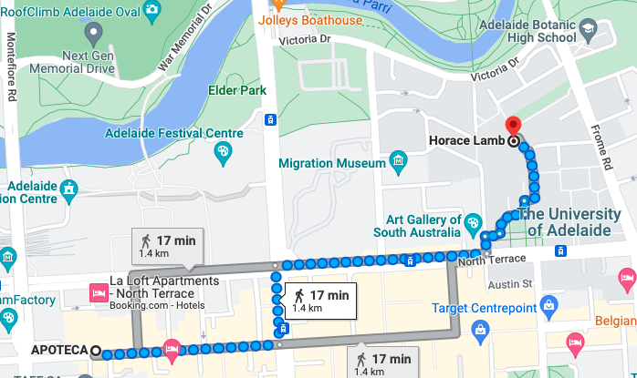
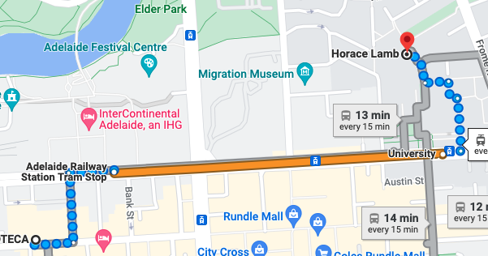

Dinner wil be from 7pm at APOTECA
It is on Hindley Street, from the location of the conference you can travel via:
Walking

A free Tram

The University of Adelaide forms part of the cultural centre of Adelaide to the north of Rundle Mall. To the west of the University there is the State Library, Museums and the South Australian Art Gallery, to the east there is the Botanic gardens and, to the north is the Karrawirraparri (River Torrens). I would recommend all if you have a spare moment (since they are just next door).
For food close by there is the hub on campus, as well as Hindley Street (location of conference dinner), Rundle Mall and Rundle Street. A bit further afield there is also North Adelaide.